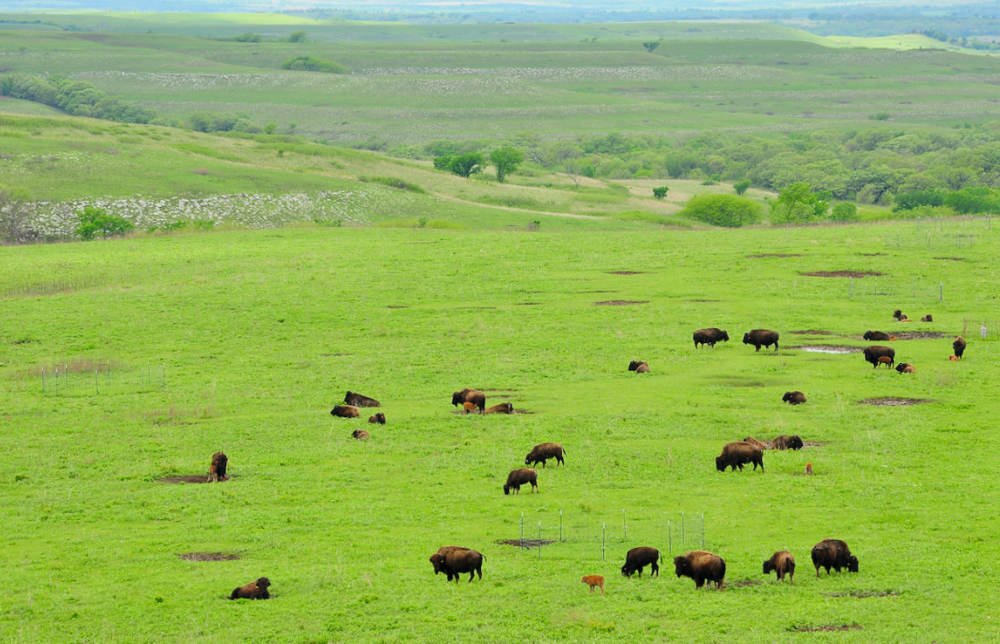

About Me
Hello! I am Cris Altman. I live in Overland Park, KS, a suburb of Kansas City. I am married with 4 children. I have a daughter, who lives in New York City another daughter living in Rexburg. My two youngest children live at home, one son and one daughter who are both in high school. I currently work in the Software Development field as a Software Quality Engineer. In my spare time, I enjoy playing board games like Ticket to Ride, Gizmos & Castles of Burgundy and refereeing soccer. Also, I am a convert to the church.
Kansas
Kansas is a state in the midwestern United States. It is home to the center point of the contiguous 48 states. It is known for it's wheat production and rolling prairies. The capitol of Kansas is Topeka and its largest city is Wichita. Famous Kansans include Dwight D. Eisenhower and Amelia Earhart.